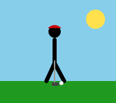

~ WHAT'S ON THE BENCH ~
1. MY PUTTER COLLECTION (ALL 23 OF THEM)
2. REGRIP A CLUB FOR UNDER FIVE BUCKS
3. BUCKET-OF-BALLS PRACTICE PLANS
Golfers who have dropped in:
MUCH OBLIGED FOR THE VISIT. COME BACK AFTER YOUR NEXT ROUND AND TELL ME YOUR SCORE!
© 1997
(The guestbook is still under construction. Drop me a line on the clubhouse bulletin board!)
Fairway Friends Blue Ribbon Site
LOOKS SHARPEST IN:....
Proud homesteader in Augusta — Golf, the finer side of fairways
You can always find me at: www.geocities.com/Augusta/Links/7926/